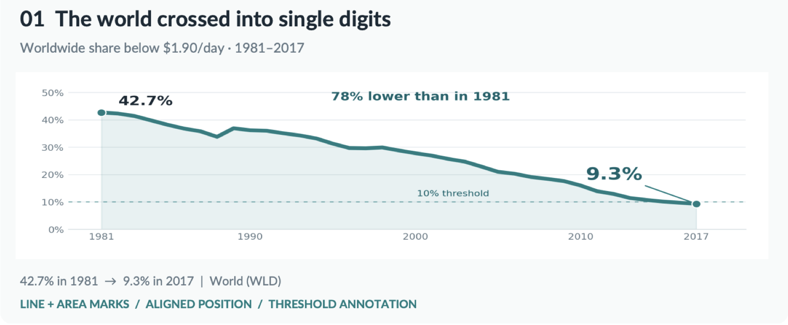
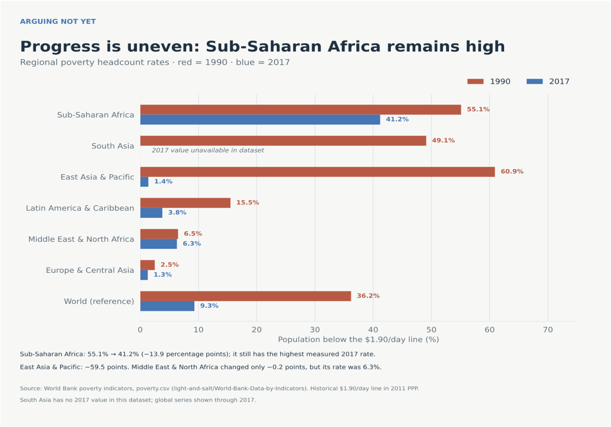

Proposition: Extreme poverty is becoming a problem of the past.
FOR the Proposition: Poverty Has Fallen Dramatically

Design Decisions and Rationale
- Full global time series and a zero-based scale. Showing the annual trajectory from 1981 through 2017 makes the long-term decline visible without truncating the vertical axis.
- Area fill and direct endpoint labels. The shaded area gives the decline visual weight, while the 42.7% and 9.3% labels make the start-to-end change easy to read.
- 10% threshold and “single digits” framing. The reference line and headline turn 9.3% into a clear achievement. That is persuasive, but the 10% cutoff is a chosen milestone—not a data-defined boundary between success and failure—and the framing can understate the hardship that remains.
- Global aggregation. The worldwide average supports the broad proposition, but it can conceal large differences between regions.
AGAINST the Proposition: Progress Leaves People Behind

Design Decisions and Rationale
- Paired bars on a shared zero-based scale. Encoding both years with bar lengths makes the difference between endpoints comparable across regions without exaggerating it with a truncated axis.
- Put Sub-Saharan Africa first and retain the world reference. The ordering foregrounds the region with the highest measured 2017 rate, while the global row makes clear that this is an uneven-progress argument, not evidence that the world rate did not fall.
- Show only 1990 and 2017. The endpoint comparison highlights the remaining gap but hides the intervening path and pace of change. This selective time framing can make progress seem more stagnant than a full time series would.
- Include regional labels, values, and the missing-data note. Direct labels aid comparison, and noting unavailable South Asia data avoids implying that every region has a complete pair.
Final Reflection
Throughout Project 2, we learned that ethical visualization requires more than accurate marks: it requires making the scope and definitions clear. Both charts identify the $1.90/day line, their populations, and their time periods, and both use zero-based scales. Even so, their headlines and selection choices lead readers toward different conclusions. We recommend pairing either framing with the other and explaining its limits, which helps readers distinguish substantial global progress from the fact that progress has been uneven and severe poverty remains.